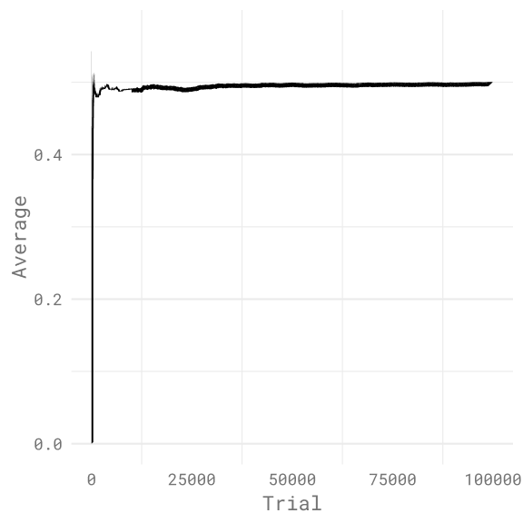

I recently been enjoying learning more about probability in R, reading David Robinson’s book Introduction to Empirical Bayes. The book primarily teaches the usage of Bayesian statistics by using baseball statistics.
However, a theme in the book and also the authors blog posts is also using R for simulation, which is very helpful when doing work related to probabilities and is the basis of Markov Chain Monte Carlo, an advanced method of simulation.
In this post however, I’ll go over how to do some basic simulation work using R and the Tidyverse.
Simulating coin tosses
Via the usage of simulation over a long period of trials, one can approximate the probability of a action, in this case coin flips.
tibble(trial = 1:100000) %>%
mutate(
coinflip = sample(c(0, 1), n(), replace = TRUE),
average = cummean(coinflip)
) -> coinFlipsIn this case, we a are simulating the flip of a coin, with heads being 0, tails being 1, with flips being done 100,000 times. The average in this case represents the cumulative mean of the coin flips overtime, which after many flips will approximate the probability of the action.
This is known as the Law of Large Numbers, which states that the average calculated from the result of all the trials should get closer to the expected value as more trials are done.
This can be visualized as well.

The Law of Large Numbers can also be displayed again, when with R one sets the probabilities for a sequence of numbers, and then runs many trials.
tibble(trial = 1:100000) %>%
mutate(
number = sample(seq(1, 4), n(),
prob = c(0.35, 0.15, 0.4, .1), replace = T)
) -> trials
# grouping to show the probabilities for each number
trials %>%
group_by(number) %>%
count() %>%
mutate(prob = n / 100000)Below is a table based on the code above.
| Number | Count | Probability |
|---|---|---|
| 1 | 35117 | 0.351 |
| 2 | 14976 | 0.150 |
| 3 | 39920 | 0.399 |
| 4 | 9987 | 0.0999 |
As seen with the probabilities created, they hew very closely to the probabilities inputted at the beginning, showing again how the Law of Large Numbers lets one approach the expected value over many trials.
Monte Carlo
The same methods can be used to run Monte Carlo experiments, which is very useful when dealing with problems regarding probability distributions.
For example, lets answer the following question.
In this game landing on yellow earns 1 point, red loses 1 point and blue earns 2 points. What is the probability of a negative score after 10 spins? The wheel is YYRB for reference.
By hand, this would be a very tedious problem, however in R, we can not only run many trials, but also simulate all the turns as well, and not even use a nested for loop!
To begin, the R code to simulate all the wheel spins.
crossing(trial = 1:1e5, turn = 1:10) %>%
mutate(
results = sample(c(1,1,-1,2), n(), replace = T)
) %>%
group_by(trial) %>%
mutate(
wheelSum = cumsum(results)
) %>%
ungroup() -> spinsWhat crossing does is it will in this case create a 1:1e5x10 dataframe, meaning each trial has 10 turns, so in practice there will be a million rows in the dataframe.
Next, we take a sample for each turn. However, to get the cumulative result, we need to group by trial, so each 1:10 period has its own cumulative sum.
After this, we can then look at the 10th spin to see the probability of a negative spin.
spins %>%
filter(turn == 10) %>%
mutate(value = ifelse(wheelSum < 0, "Negative", "Positive")) %>%
group_by(value) %>%
count() -> values
# Then divide by the values given
values[1, 2] / sum(values$n) # 0.01271We first filter to ensure we get only the results from the 10th spin, then we split the dataframe between sums that were negative versus positive. Finally, we count the values divide the negative values by the sum of both negative and positive values, giving us our probability.
While a toy example, there are some problems, particularly in finance, which require Monte Carlo methods to solve.
Have fun trying these techniques out!